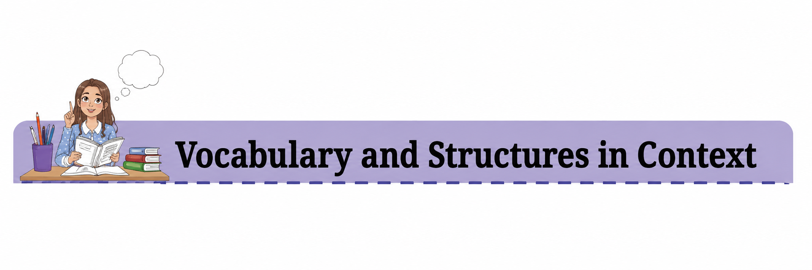

ENGLISH CLASS- 9
CHAPTER-3
(Winds of Change & Canvas of Soil)

Check Your Understanding
I. Work in pairs to complete the table on pankha. Share your answers with your classmates and teacher.
The chapter describes several regional varieties of traditional hand fans, showing how their materials and designs differ from one region to another.
| State | Type of Fan | Material Used |
|---|---|---|
| Rajasthan | Appliqué hand fan | Cloth |
| Rajasthan | Embroidered hand fan | Gold thread |
| Rajasthan | Temple hand fans | Cloth and decorative materials |
| Gujarat | Mirror work hand fans | Mirror work and cloth |
| Gujarat | Embroidered hand fans | Beads |
| Gujarat | Decorative hand fans | Leather, decorated with thread and wool |
| West Bengal | Sola hand fans | Sola |
| Uttar Pradesh | Phadh hand fans | Pure gold, silver zari, silk and satin frills |
| Bihar | Colourful and sturdy hand fans | Bamboo |
Important Note
The chapter explains that different regions developed their own varieties of traditional pankhas, using distinct materials and intricate designs. For example, the Phadh hand fans of Uttar Pradesh are decorated with pure gold, silver zari, silk and satin frills, while Bihar is known for its colourful and sturdy bamboo hand fans. Bengal's artisans make delicate fans from the milky-white spongy centre of sola, a type of water grass.
These regional variations demonstrate the diversity of Indian handicrafts and show how the design and material of a pankha are closely connected with the cultural traditions and resources of its region.

Critical Reflection
I. Read the extracts given below and answer the questions that follow.
1. Over time, pankhas became significant cultural goods distributed through trade routes. They were considered exotic and stylish. Although there was substantial commonality in their use across India, different villages and towns developed their own varieties of traditional pankhas. Each place developed pankhas with distinct materials or a variety of intricate designs, that set them apart from one another.
(i) State whether the following sentence is true or false.
Statement: Pankhas were one of the most popular items of commerce.
Answer: False.
The extract states that pankhas became significant cultural goods distributed through trade routes, but it does not state that they were one of the most popular items of commerce.
(ii) Why has the word ‘traditional’ been used to describe pankhas?
Answer:
The word ‘traditional’ has been used because pankhas have been made and used in India for a long time, with different regions developing their own varieties using indigenous materials and distinctive designs. They represent the craftsmanship, cultural practices, and heritage of different communities.
(iii) Complete the following statement.
The sentence ‘They were considered exotic and stylish’ is an opinion and not a fact because the words ‘exotic’ and ‘stylish’ express a personal or subjective judgement about the appearance and appeal of pankhas.
(iv) Infer one reason for commonality in the use of pankhas across India.
Answer:
One reason for the common use of pankhas across India is that they were useful for providing a flow of air and keeping people cool, especially before modern cooling technologies became widely available.
(v) Select which one of the two statements is the correct assertion for the given reason.
Reason: Pankhas were made of indigenous materials, unique to the region, with elaborate designs.
| Option | Statement | Answer |
|---|---|---|
| A | Each kind of pankha could be distinguished from the other. | Correct |
| B | Pankhas were used by many people. | Incorrect |
Explanation: The reason directly supports statement A because the use of different regional materials and elaborate designs made each variety of pankha distinct from the others.
2. With time and the advent of technology and innovative creations, the beautiful culture of pankhas runs the risk of slowly losing its presence among Indians. Once made for personal use, over time this handicraft has transformed into a commercial business and now provides some form of livelihood to India’s artisans. The slight increase in popularity and demand is significantly factored by the different versions of the pankha being crafted.
(i) Infer one negative impact of technological advancement on pankha.
Answer:
Technological advancement has reduced the everyday need for traditional pankhas because modern cooling devices have become widely available. As a result, the traditional culture and practice associated with pankhas may gradually lose their presence among Indians.
(ii) Complete the statement with an appropriate reason.
The writer refers to ‘pankhas’ not just as an object but as a ‘culture’ because they represent traditional craftsmanship, regional artistic practices, cultural stories, and the skills passed down through generations.
(iii) Select a line from the extract which depicts how the role of the pankha has changed over the years.
Answer:
“Once made for personal use, over time this handicraft has transformed into a commercial business and now provides some form of livelihood to India’s artisans.”
This line clearly shows the change from pankhas being primarily made for personal use to becoming a commercial handicraft that provides livelihood to artisans.
(iv) List one way in which the increase in demand of pankhas might benefit artisans.
Answer:
An increase in demand for pankhas can provide artisans with more opportunities to sell their handicrafts and earn a sustainable livelihood. It can also encourage them to continue practising and preserving their traditional craft.
(v) Select the factor that has contributed to the commercialisation of pankhas.
| Option | Factor | Answer |
|---|---|---|
| A. | Cultural preservation | ✗ |
| B. | Economic demand | ✓ Correct |
| C. | Technological advancements | ✗ |
| D. | Artisan initiative | ✗ |
Explanation: The chapter connects the increase in popularity and demand for different versions of pankhas with their transformation into a commercial business. :contentReference[oaicite:3]{index=3}
II. Answer the following questions.
1. How does the title ‘Winds of Change’ capture the essence of the chapter?
Answer:
The title ‘Winds of Change’ captures the changing role and status of traditional pankhas in Indian society. Earlier, pankhas were commonly made for personal use and were closely connected with regional traditions and craftsmanship. With technological advancement and changing lifestyles, their everyday use has declined, while they have increasingly become handicraft and commercial products. At the same time, new designs and initiatives such as workshops and exhibitions offer opportunities to preserve and promote the craft.
2. Support the following statement with any two relevant examples from the chapter.
Statement: ‘The structure and design of pankhas are testimony to the cultural identity of the region.’
Answer:
The structure and design of pankhas reflect the cultural identity of the regions in which they are made. For example, the Phadh hand fans of Uttar Pradesh are decorated with pure gold, silver zari, silk, and satin frills, reflecting elaborate regional craftsmanship. Similarly, Bihar’s hand fans are colourful and sturdy and are made from bamboo, a locally available material.
3. The chapter mentions pankhas running the risk of slowly losing their presence among Indians. Evaluate how the balance between preserving traditional craftsmanship and incorporating innovative designs in the creation of pankhas will help in this regard.
Answer:
A balance between traditional craftsmanship and innovative designs can help keep pankhas relevant in modern times. Traditional methods, regional materials, patterns, and skills should be preserved so that the cultural identity of the craft is not lost. At the same time, artisans can create new shapes, designs, and versions of pankhas to meet contemporary tastes and attract new buyers. The chapter itself notes that different versions of pankhas have contributed to their increasing popularity and demand. Thus, innovation can support the survival of the traditional craft without removing its cultural essence.
4. How might initiatives such as pankha-making workshops contribute to the preservation of this traditional craft?
Answer:
Pankha-making workshops can help preserve the craft by spreading awareness about its beauty, cultural importance, stories, and traditional techniques. They also provide artisans with opportunities to demonstrate their skills to a wider audience. Such workshops can encourage younger people to learn the craft and can create commercial opportunities for artisans, helping them earn a sustainable livelihood.
5. The writer mentions celebrating pankhas in the concluding part of the chapter. Assess how this could be beneficial to artisans and the craft.
Answer:
Celebrating pankhas can increase public awareness and appreciation of the craft. It can create greater demand for handmade pankhas and provide artisans with a commercial platform to demonstrate and sell their work. This can help artisans create a sustainable livelihood while encouraging them to continue their traditional skills. Celebrating pankhas also helps preserve the cultural stories and artistic traditions associated with this handicraft.
6. How does the restriction of the use of pankha for decorative purposes reflect the changing cultural role of these traditional fans in modern India?
Answer:
The shift towards using pankhas mainly for decorative purposes reflects the changing role of these traditional fans in modern India. Earlier, pankhas were practical objects used for personal cooling. With the arrival of modern technology and changing lifestyles, their everyday functional use has declined. They are increasingly valued as handicrafts that represent Indian culture, regional artistry, and traditional craftsmanship. Thus, the pankha has gradually moved from being primarily a functional object to also being a cultural and decorative artefact.

Vocabulary and Structures in Context
I. Classify the pairs of words given below into the following categories: Appearance, Place, and Material.
| Appearance | Place | Material |
|---|---|---|
| exotic and stylish | villages and towns | thread and wool |
| ornate and encrusted | within and outside | silk and brass |
More examples of word pairs from the text:
| Word Pair | Category |
|---|---|
| shapes and sizes | Appearance / Physical features |
| culture and stories | Cultural aspects |
| beauty and importance | Qualities |
| grass and metal | Material |
| cane and palm leaves | Material |
II. Find the word pairs for the following fixed expressions. Write the meanings of these expressions.
Note: Some expressions with and have a fixed order. The words cannot normally be reversed.
| S.No. | Word 1 | Word 2 | Fixed Expression | Meaning |
|---|---|---|---|---|
| 1. | high | tear | high and dry | In a difficult situation, without help or money. |
| 2. | cut | fast | cut and run | To make a quick or sudden escape. |
| 3. | fact | sundry | facts and figures | Accurate and detailed information. |
| 4. | all | thin | all and sundry | Everyone, not just a few special people. |
| 5. | wear | figures | wear and tear | The damage to an object caused by normal use. |
| 6. | time | run | time and again | Often; on many or all occasions. |
| 7. | thick | again | thick and thin | Even when there are problems or difficulties. |
| 8. | hard | dry | hard and dry | In a difficult or unpleasant condition. |
III. Collocations
The following expressions are conventional combinations of words. Such combinations are called collocations.
1. Choose the appropriate word collocations for the following sentences.
| S.No. | Sentence | Answer |
|---|---|---|
| 1. | The students have to (take/give) the English exam tomorrow. | take |
| 2. | The interviewer asked the candidate to (take/have) a seat. | take |
| 3. | My scooter (dashed against/ran into) a car. | ran into |
| 4. | I must (take/own) responsibility for my success. | take |
| 5. | I would like to (tone up/improve) my grammar. | improve |
IV. Present Perfect Tense
Read the following sentences and identify the verbs.
| S.No. | Sentence | Present Perfect Verb |
|---|---|---|
| 1. | In modern times, pankhas have become traditional craft items in India. | have become |
| 2. | Gujarat’s industrious home-based women workers have worked tirelessly in the handicraft of pankha-making. | have worked |
| 3. | Many tribes in India have adopted this handicraft. | have adopted |
| 4. | Once made for personal use, this handicraft has transformed into a commercial business. | has transformed |
Fill in the blanks with the present perfect form of the verbs given in brackets.
Puppets have long fascinated audiences worldwide. Puppeteers have created intricate characters and captivating stories with their skillful artistry. They have mastered the delicate movements that bring these lifeless figures to life, entertaining both children and adults. Over the years, puppetry has evolved, using modern technology while preserving traditional techniques. Many puppeteers have passed down their craft through generations, ensuring its continuity. They have performed in theatres, on television, and at festivals, conveying important cultural narratives.
Quick Revision: Present Perfect Tense
The present perfect tense is generally formed with:
has / have + past participle (third form of the verb)
| Subject | Structure | Example |
|---|---|---|
| I / You / We / They | have + past participle | They have preserved the craft. |
| He / She / It | has + past participle | She has learned the traditional technique. |
The tense is used when a past action has a connection with the present, or when an action has been completed recently.
Canvas of Soil
Check Your Understanding
I. Read the poem again and complete the summary of each stanza by filling in the blanks.
1.
The earth is portrayed as a rich palette where gardeners’ dreams flourish in the form of seeds, awaiting spring.
2.
The garden flowers bloom into a beautiful display of different blossoms, resembling a painting by Mother Nature, in the light of morning.
3.
Each garden is likened to a wide canvas, integrating art and life. Through the efforts of gardeners, gardens transform into still-life paintings.
II. Select the appropriate title for each stanza from those given below.
| Stanza | Appropriate Title |
|---|---|
| 1. | Earth and Possibilities |
| 2. | Nature’s Work of Art |
| 3. | Gardens as Living Canvases |
Extra titles: Sweet-smelling Blossoms; The Painter’s Canvas
III. Match the poetic devices in Column 1 to the examples in Column 2.
| Column 1 – Poetic Device | Answer | Column 2 – Example |
|---|---|---|
| 1. Imagery | (iv) | colours, brushstrokes, blossoms, shades of green |
| 2. Metaphor | (vi) | garden as a painting, plot as canvas, seeds as brushstrokes |
| 3. Rhyme Scheme | (ii) | AABB |
| 4. Tone | (i) | appreciative |
| 5. Mood | (vii) | joyful |
| 6. Speaker | (v) | a gardener |
| 7. Alliteration | (iii) | ‘Blossoms bloom’ |
Critical Reflection
I. Read the given extracts from the poem and answer the questions that follow.
1. “Brushstrokes of seeds, planted true,
Awaiting spring’s vibrant hue.”
(i) The poet has used a metaphor in ‘Brushstrokes of seeds’. Which option from those given below uses a metaphor?
Answer: B. She has a heart of gold.
The expression “heart of gold” is a metaphor because a person's heart is not literally made of gold. It compares the person's kindness and goodness with the valuable quality of gold.
(ii) Complete the sentence appropriately.
The phrase ‘planted true’ is significant because it implies that the seeds have been planted properly and carefully, with the hope that they will grow successfully.
(iii) Why has the poet used the word ‘hue’ instead of ‘colours’ in the extract?
Answer:
The poet uses “hue” instead of “colours” because “hue” specifically refers to a shade or variation of a colour. It suits the poem's artistic imagery and strengthens the comparison between the garden and a painting.
(iv) Complete the following analogy correctly with a word from the extract.
Summer : hot :: Spring : vibrant
The word “vibrant” is taken from the phrase “spring’s vibrant hue”.
(v) Read the Assertion (A) and the Reason (R) and select the option that is correctly suited.
Assertion (A): Gardeners wait for Spring.
Reason (R): Gardens are worth painting in Spring.
Answer: B. Both (A) and (R) are true but (R) is not the correct explanation of (A).
The poem tells us that the seeds await spring and that spring brings vibrant colours and blossoms. However, the reason that gardens are beautiful enough to be compared with paintings does not explain why gardeners wait for spring.
2. “Each plot, a canvas wide,
Where art and life coincide.”
(i) What does ‘Each plot’ refer to in this extract?
Answer:
“Each plot” refers to each individual garden plot or piece of land cultivated by gardeners. The poet compares every such plot to a canvas on which nature and the gardener's work create a living work of art.
(ii) Select which option imitates the rhyme scheme of the extract.
Answer: A. beautiful and clear / laughter and cheer
The words “wide” and “coincide” rhyme, giving the extract an AA rhyme pattern. Similarly, “clear” and “cheer” rhyme.
(iii) Select the line from the extract that conveys that gardening blends aesthetic beauty with natural growth.
Answer:
“Where art and life coincide.”
This line shows that gardening brings together artistic beauty and the natural process of life and growth.
(iv) Complete the following sentence appropriately.
The plot is likened to a canvas suggesting that the garden is like a work of art created through the combined efforts of nature and the gardener.
(v) Why has the poet most likely used the word ‘wide’ instead of ‘long’ in ‘canvas wide’?
Answer:
The word “wide” emphasises the broad and open space of a garden plot. It also strengthens the comparison with a painter's canvas, which provides a broad surface on which an artist can create a picture.
II. Give reasons for the comparisons made by the poet in the poem.
1. A painter is compared to a gardener because __________.
Answer:
A painter and a gardener are both creators who use different materials to produce something beautiful. A painter uses colours and a canvas, while a gardener uses soil, seeds, plants, and flowers to create a beautiful garden.
2. A palette is like earth as __________.
Answer:
A palette is like earth because both provide the base from which different colours and forms of beauty emerge. The earth provides the medium in which plants and flowers grow, just as a palette provides colours for a painting.
3. The brushstrokes are like seeds because __________.
Answer:
The brushstrokes are like seeds because both are placed carefully to create something beautiful. Seeds grow into plants and flowers, just as brushstrokes gradually form a painting.
4. A canvas is similar to a garden plot as __________.
Answer:
A canvas is similar to a garden plot because both provide a space on which a creator produces a work of art. A painter creates a picture on a canvas, while a gardener creates a living picture in a garden plot.
III. Answer the following questions.
1. How does the metaphor ‘Brushstrokes of seeds’, enhance the understanding of gardening as an art form?
Answer:
The metaphor “Brushstrokes of seeds” presents seeds as if they were brushstrokes made by an artist. It shows that gardeners carefully place seeds in the soil just as painters carefully place brushstrokes on a canvas. As the seeds grow into flowers and plants, they create a beautiful living picture. Thus, the metaphor presents gardening as a creative art form.
2. What can you infer about the poet’s perspective on the relationship between nature and creativity from the following lines?
“Each plot, a canvas wide,
Where art and life coincide.”
Answer:
The poet views nature and creativity as closely connected. A garden is not merely a piece of land; it is a place where human creativity and natural growth work together. The gardener shapes the garden through care and creativity, while nature provides the living plants, colours, and growth. Thus, art and life become one in the garden.
3. Do you think the imagery in the poem successfully paints a vivid picture in the reader’s mind? If yes, why? If no, why not?
Answer:
Yes, the imagery successfully creates a vivid picture in the reader's mind. The poet uses descriptions such as “spring’s vibrant hue,” “blossoms bloom,” “morning light,” and “shades of green, red, and blue.” These visual details help the reader imagine a colourful garden filled with flowers and plants. The comparison of the garden with a painting makes the picture even more vivid.
4. Support the view that the poet’s mention of the colour yellow, besides red, blue and green, would have lent effectively to the imagery.
Answer:
The inclusion of yellow would have made the imagery richer and more vibrant. Yellow could represent the bright petals of flowers or the warmth of sunlight in the garden. Along with red, blue, and green, it would create greater colour contrast and make the garden appear more lively and visually attractive.
5. Considering the line ‘Gardens become paintings still’, what can you interpret about the poet’s view on the timelessness of nature’s beauty?
Answer:
The line suggests that the beauty created in gardens can be appreciated like a lasting work of art. Although flowers and seasons change, the beauty and artistic value of nature remain meaningful. The poet therefore sees nature as a source of enduring beauty that can continue to inspire people like a painting.
6. Justify the title of the poem, ‘Canvas of Soil’.
Answer:
The title “Canvas of Soil” is appropriate because the poem compares a garden plot to a painter's canvas. The soil becomes the surface on which the gardener creates a living work of art using seeds, plants, flowers, and colours. Just as an artist transforms a blank canvas into a painting, a gardener transforms soil into a beautiful garden. The title therefore captures the poem's central idea that gardening is a form of art in which nature and human creativity come together.
Vocabulary in Context
I. The poet refers to the shades of green, red, and blue in the poem. Let us read some of the names of different shades of these colours.
Answer:
Here are two things that can be associated with each of the given shades:
| Colour | Shade | Two Things Associated with It |
|---|---|---|
| Blue | Navy blue | School uniform, night sky |
| Indigo | Indigo dye, traditional Indian textiles | |
| Cobalt blue | Pottery, glassware | |
| Denim | Jeans, jackets | |
| Sky blue | Clear sky, calm water | |
| Ice blue | Ice, winter sky | |
| Green | Pine green | Pine trees, forests |
| India green | Indian flag, leaves | |
| Apple green | Young leaves, apples | |
| Jade | Jade stone, jewellery | |
| Olive | Olive leaves, military clothing | |
| Pistachio | Pistachio nuts, ice cream | |
| Red | Rusty red | Rusty iron, autumn leaves |
| Salmon | Salmon fish, pale pinkish-red flowers | |
| Scarlet | Bright flowers, red clothing | |
| Crimson | Deep red flowers, fabric | |
| Blood red | Blood, deep red paint | |
| Vermilion | Traditional red pigment, religious markings |
II. You have studied painting-related words like palette, brushstrokes, shades, hue, colours, and canvas. Now, read the following paragraph and discuss in pairs what the underlined painting-related words might mean.
Discuss this way:
I think ____________ means ____________ because the
passage talks about ____________.
Example: I think portrait means a picture of someone’s
face because the passage talks about capturing a
friend’s features.
In the art studio, young painters eagerly approached
their easels, each framing a canvas that they had to work
on. The teacher encouraged them to experiment with a
diverse tonal range, playing with shades and hues to
bring their paintings to life. One student focused on a
detailed portrait, capturing his friend’s features, first
with careful underpainting and then filling the final
colours. Another student worked on a mural, depicting
a Spring Day on the right wall of the classroom. The
room continued to buzz with artistic energy.
Answer:
| Painting-related Word | Meaning in the Context |
|---|---|
| Easels | A stand used by an artist to hold a canvas or painting while working on it. |
| Canvas | A strong cloth surface on which an artist paints a picture. |
| Tonal range | The range of light and dark shades used in a painting. |
| Shades | Different variations of a colour, especially lighter or darker forms of it. |
| Hues | Different colours or particular shades of colours. |
| Portrait | A painting, drawing, or other representation of a person, especially showing the face and features. |
| Underpainting | An initial layer of paint applied to a canvas before the final colours and details are added. |
| Mural | A large painting or artwork made directly on a wall or other permanent surface. |
Understanding the Words in Context
The paragraph describes students working in an art studio. They use easels to hold their canvases, experiment with a tonal range, and use different shades and hues to make their paintings lively. One student creates a portrait using underpainting before adding the final colours, while another creates a mural on a classroom wall.